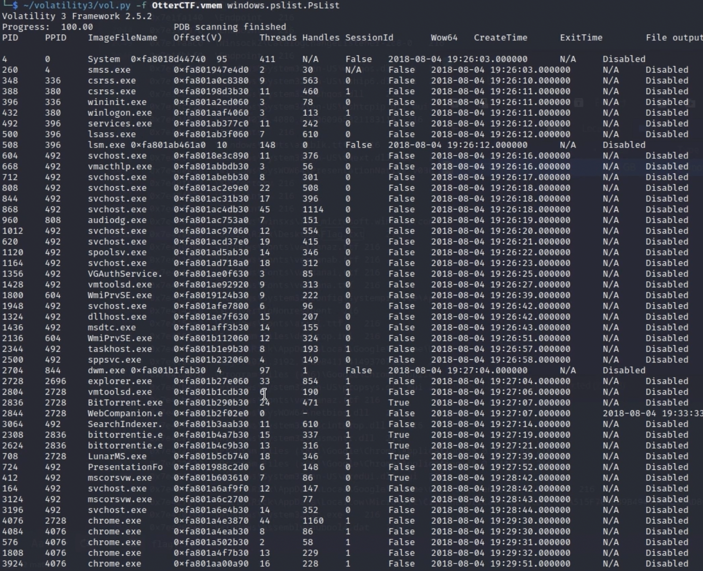

Memory Forensics with Volatility

So in this CTF challenge, im given a virtual memory image called OtterCTF.vmem and told to try to find a flag within the actual image. So for a forensics challenge involving memory, I usually use the tool Volatility. Its basically a tool that lets you analyze RAM captures (hence the name volatility) to find running processes, passwords, and sometimes even images or flags hidden by CTF creators. So one of the first things I like to do is to run the pslist plugin. This basically gives us a list of running procceses that are actually in this memory dump. This is going to show us the different executables someone might have ran during their session or maybe the files that they opened
Now that I have taken a look at some of the processes ran by the user during the session, I am going to go back and run the windows.cmdline.CmdLine command to give us a similiar view to the pslist command, however it shows us the full command line that was executed with each of these procceses. You can see all the different windows processes, however something caught my eye. I saw that there was a path called Windows/system32/NOTEPAD.EXE which is open by Users/Rick/Desktop/Flag.txt (bingo).
Now finally, I would just use the windows.filescan.Filescan command to extract the file on Rick's Desktop to get the command and then I would end up with the flag